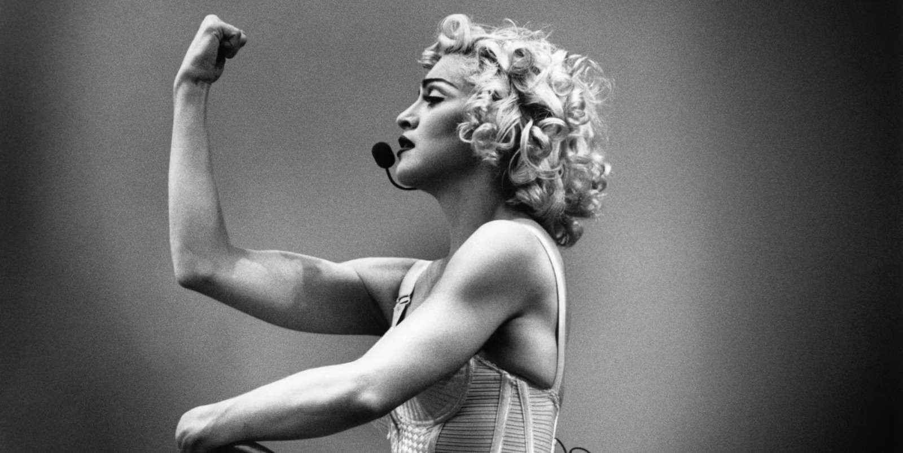
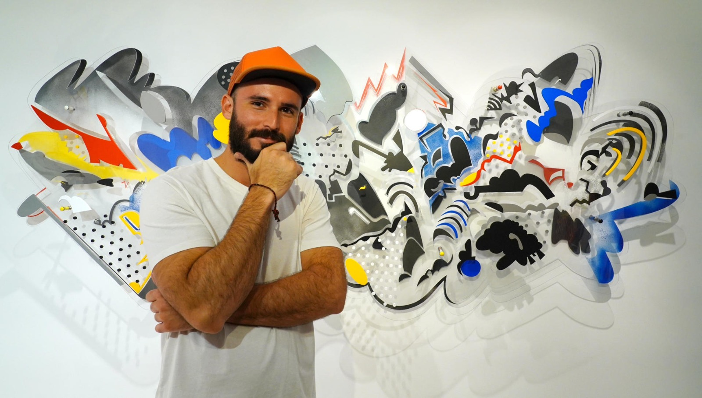
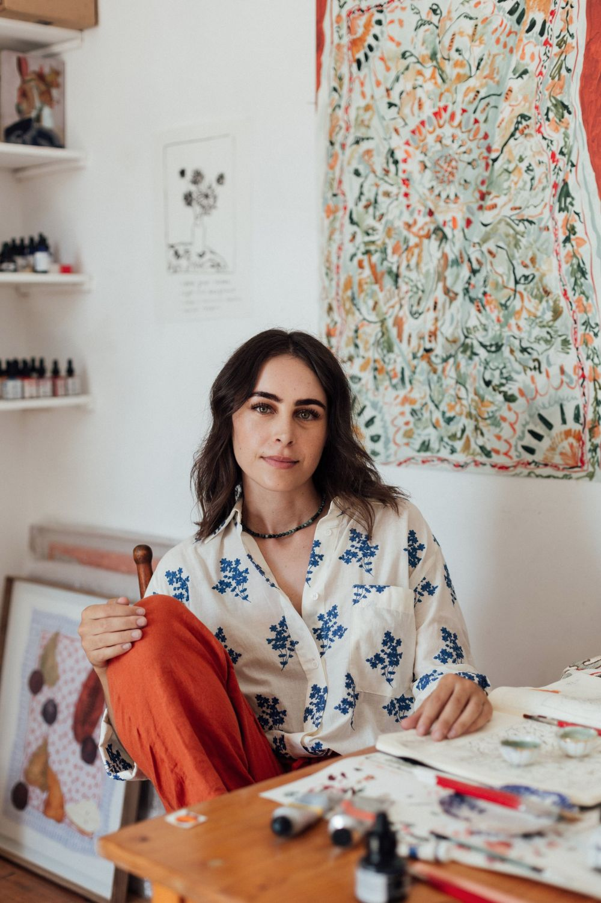
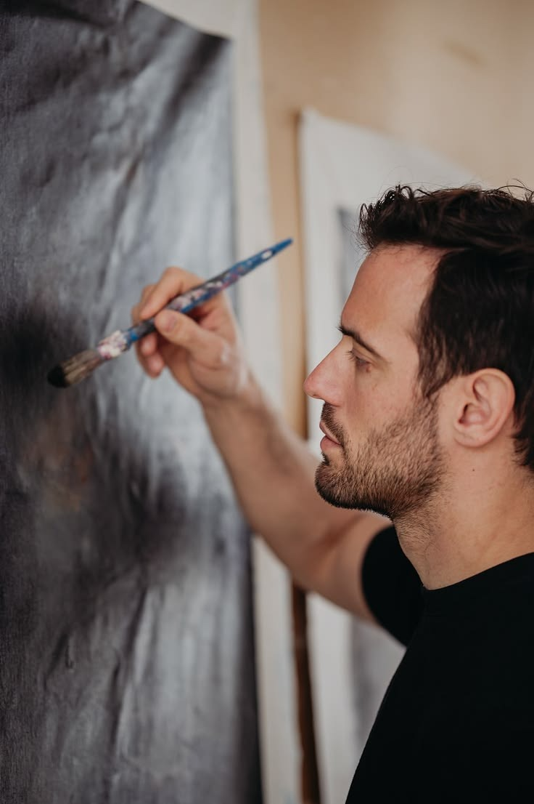
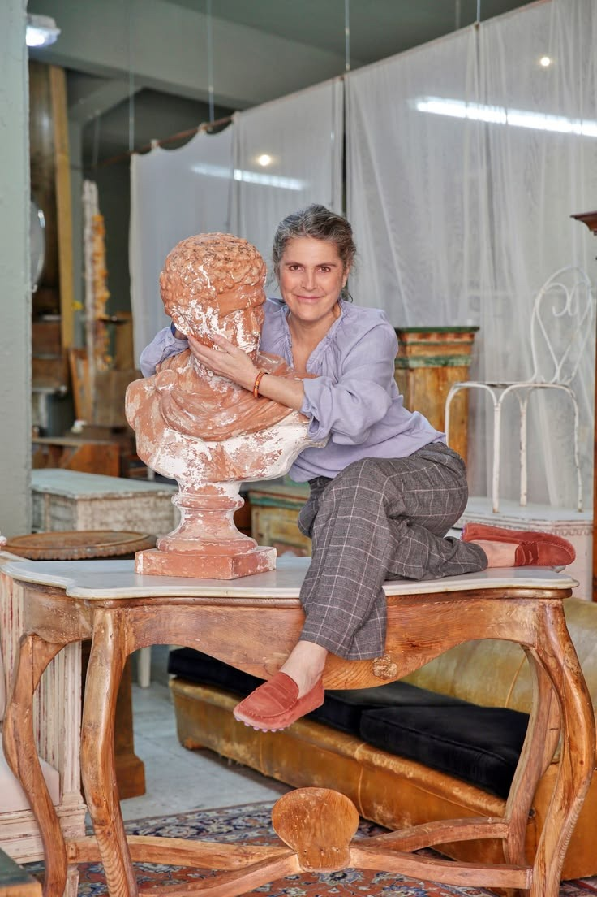
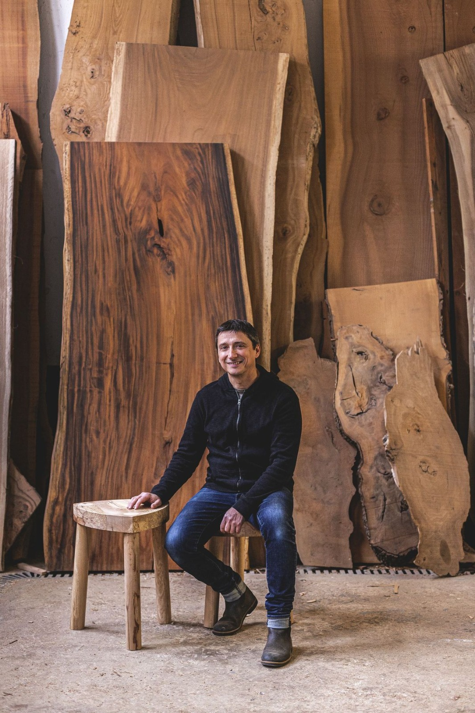
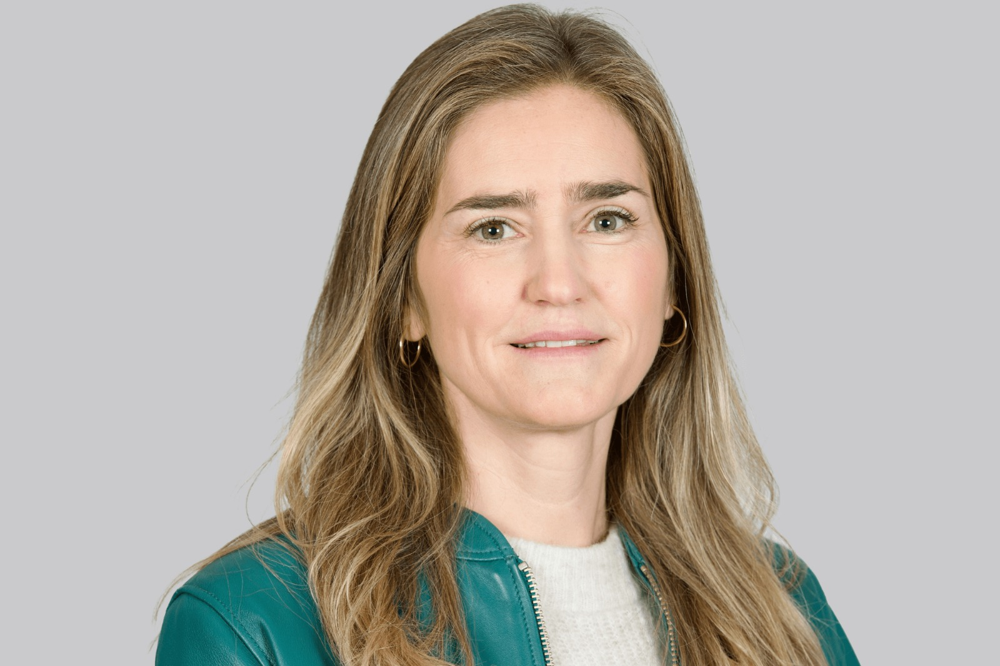
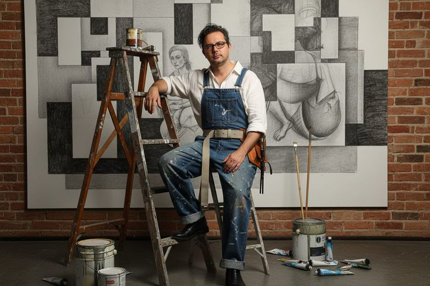

María Lloret
Ceramista · Valencia
Jornadas 2026
Artesanos, diseñadores y pensadores que dan forma al futuro de los oficios tradicionales.

Ceramista · Valencia

Tejedor · Murcia

Diseñadora · Barcelona

Alfarero · Úbeda

Investigadora · Girona

Cestero · Salamanca

Encajera · Tarragona

Herrero · Bilbao